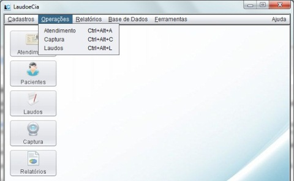

Operações gerais de Atendimento ao Paciente
Neste tópico você irá aprender como fazer o atendimento ao paciente dentro do sistema, desde o momento em que ele marca o procedimento até a impressão do laudo do exame realizado pelo médico.
O primeiro passo é cadastrar uma ficha de atendimento (tópico 4.1) para o paciente. Neste passo é definido se o paciente será atendido por um convênio ou não e quais exames o mesmo irá fazer. Também é possível fazer a impressão da ficha de atendimento para o encaminhamento ao médico que irá executar o procedimento.
Após este primeiro passo, o atendimento é feito em uma segunda tela, a tela de laudos e captura (tópico 4.2), onde o profissional executante irá realizar o procedimento, capturando as imagens necessárias, e gerando o laudo em seguida.
As opções de atendimento podem facilmente serem acessadas pelo menu Operações ou pelos ícones de atalho presentes na tela inicial.
